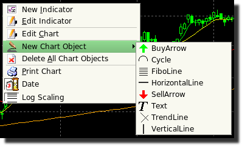
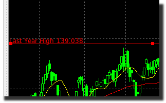
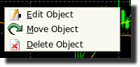
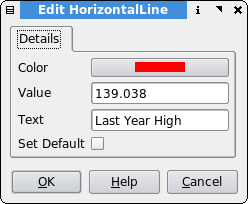

HorizontalLine
Description
A horizontal line is plotted over the entire width of the chart area.
Create
To create a HorizontalLine, select draw mode  from the main toolbar and right click with the mouse on the
chart you wish to apply it to.
from the main toolbar and right click with the mouse on the
chart you wish to apply it to.

This can be either the main chart area or any of the indicators that appear in the indicator chart area. Select "New Chart Object" from the popup menu and choose "HorizontalLine" from the submenu.
After this the mouse pointer will change to a hand pointer. To place the HorizontalLine on the chart you must click the left mouse button. The object will then appear on the chart.

Selecting
In order to edit the HorizontalLine, you must first select it. In addition you must be in the draw mode. Select the HorizontalLine by left clicking with the mouse anywhere on the line. The object will be selected when a series of "grab boxes" appears just along it's length, as shown in the picture above.
Then you can right click the mouse for a context menu which allows you to modify the settings.

Edit
The horizontal line settings are defined as follows:
- Color - The color of the line. Pressing the button bring up a dialog.
- Value - Defines the vertical position of placement on the chart.
- Text - Here you can enter a note which appears at the left-hand screen side.
- Set Default - If checked, all settings will default to the current values when new ones are created.

You may also double-left click on the object to bring up the edit dialog directly.
Move
To drag the HorizontalLine across the chart, click the left mouse button on any of the grab boxes. The HorizontalLine will then follow the mouse pointer as it moves. To drop the HorizontalLine, click the left mouse button.
Delete
This will permanently delete the HorizontalLine from the chart.